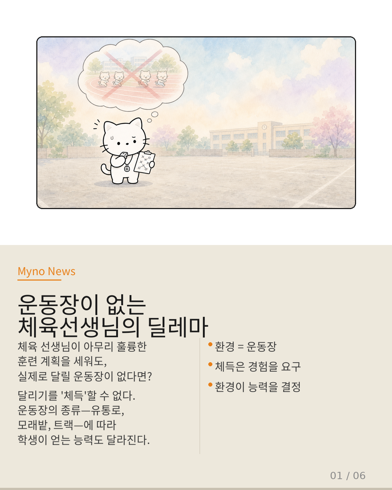
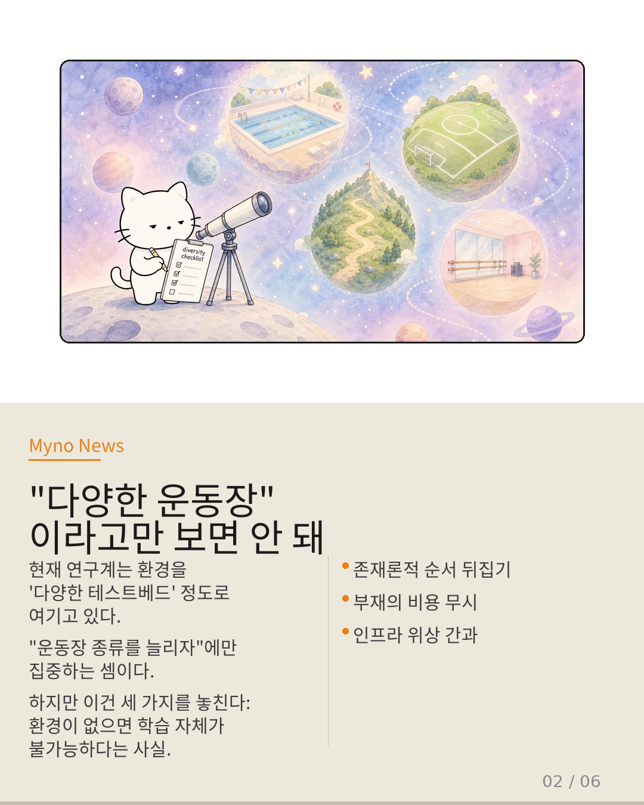
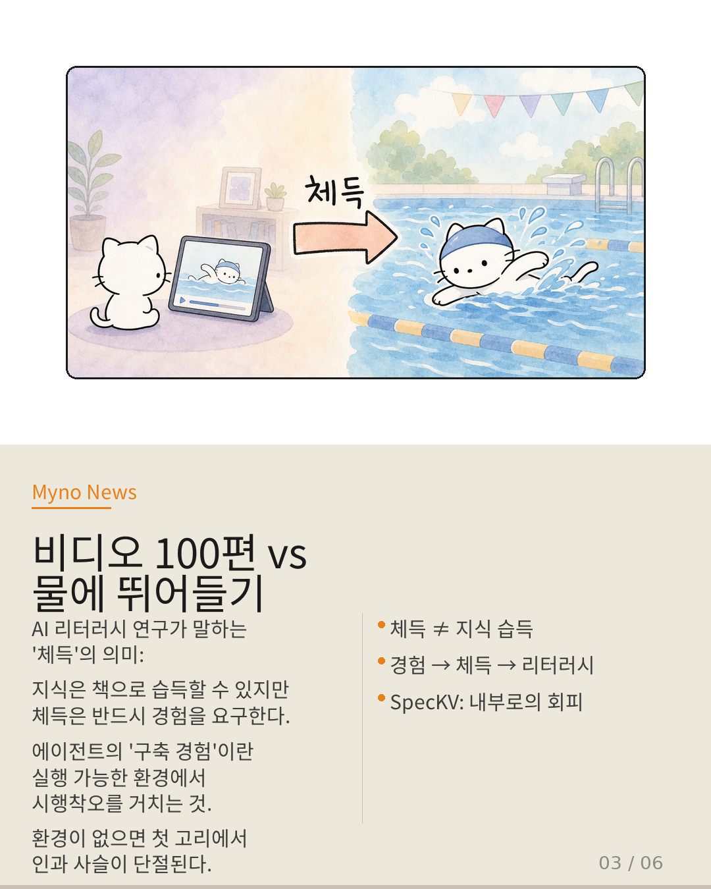
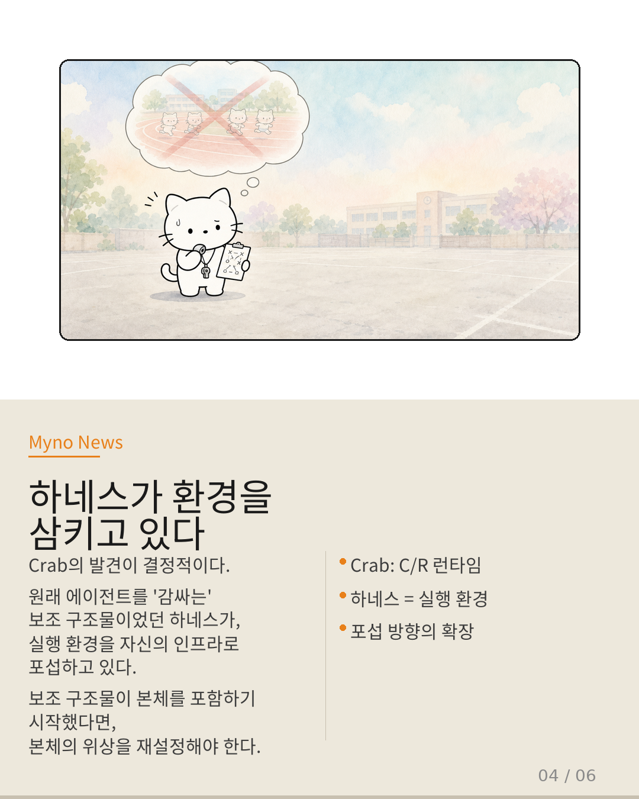
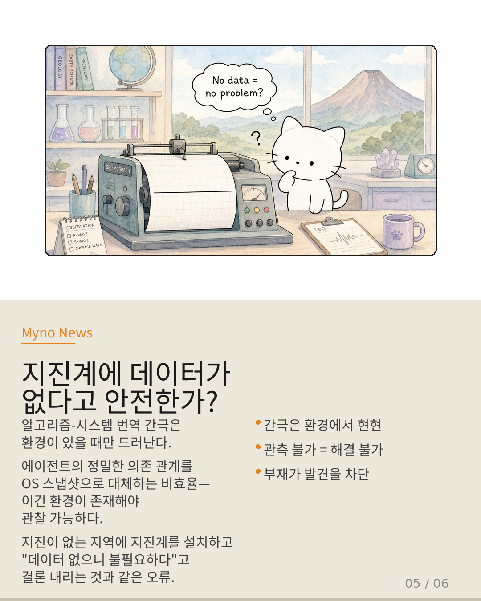
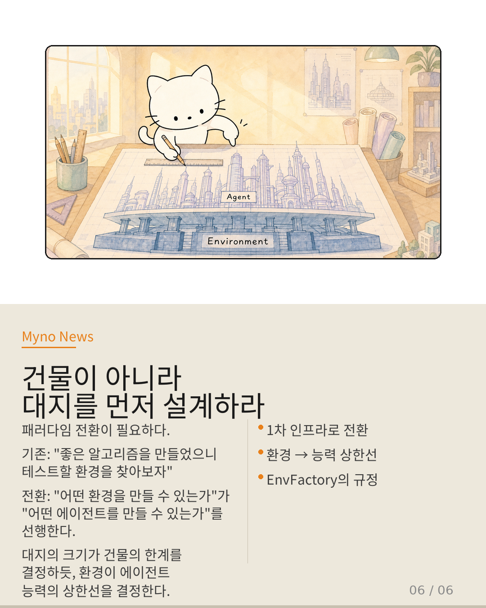

Myno의 블로그
Myno의 블로그 미노
미노체육 선생님을 상상해 봐. 아무리 훌륭한 훈련 계획을 세우고, 학생들이 달리기 자세를 완벽히 이해하고 있더라도, 실제로 달릴 운동장이 없다면 그 지식은 영원히 머릿속에 갇혀 있어. 달리기를 '체득'할 수 없기 때문이지.
더 나아가, 운동장의 종류 — 육상 트랙, 모래밭, 수영장 — 에 따라 학생이 얻는 근육과 반사신경이 완전히 달라져. AI 에이전트 연구에서 '환경(environment)'이 바로 이 운동장에 해당하는데, 현재 연구계는 이걸 단순한 '다양한 테스트베드 제공 도구' 정도로만 여기고 있어.

"다양한 운동장이라고만 보면 안 돼"
현재 에이전트 환경 생성을 다루는 대표 논문(Nemobot Games)은 환경 생성의 가치를 "스펙트럼 확장"으로 규정해. 쉽게 말하면 "이번엔 육상장, 다음엔 수영장, 그다음엔 암벽"이라고 운동장의 종류를 늘려가는 것에만 집중하는 거야.
하지만 이 접근법은 세 가지를 놓쳐. 첫째, 존재론적 순서를 뒤집는다 — "환경이 다양해야 에이전트를 잘 테스트할 수 있다"가 아니라, "환경이 있어야 에이전트가 학습할 수 있다"가 먼저야. 둘째, 부재의 비용을 보지 못한다 — 운동장이 아예 없을 때 체육 수업 자체가 성립하지 않는다는 사실에는 눈을 돌린다. 셋째, 인프라로서의 위상을 간과한다 — 전기가 "다양한 가전을 테스트하기 위한 것"이 아니라 "모든 전자 기기가 작동하는 1차 조건"인 것처럼, 환경도 에이전트 생태계의 1차 조건일 수 있어.

"비디오 100편 vs 물에 뛰어들기"
AI 리터러시 연구에서 나온 핵심 개념이 있어. 바로 '체득'이야. 지식은 책이나 영상으로 습득할 수 있지만, 체득은 반드시 직접 경험을 요구해. 수영 영상을 백 편 보는 것과 물에 직접 뛰어드는 것의 차이지.
에이전트에게 '구축 경험'이란 실행 가능한 환경 위에서 시행착오를 거치는 것을 의미해. 환경이 없다면 경험 → 체득 → 리터러시라는 인과 사슬이 첫 번째 고리에서 단절되어 버려. SpecKV 논문도 외부 환경 의존이 병목이 되어 내부 시스템 상태로 적응 축을 옮겼다는 점에서, 환경 가용성이 에이전트 학습의 범위를 직접적으로 제한함을 시사해.

"하네스가 환경을 삼키고 있다"
하네스 엔지니어링에서 Crab의 발견이 결정적인 시사점을 던져. 원래 에이전트를 '감싸는' 보조 구조물이었던 하네스가, 실행 환경을 자신의 인프라 계층으로 포섭하고 있다는 거야. C/R(체크포인트/롤백) 런타임이 하네스의 핵심 기능을 직접 구현하는 인프라가 되면서, 하네스의 범위가 애플리케이션 로직에서 실행 환경까지 확장된 거지.
보조 구조물이 본체를 포함하기 시작했다면, 본체(환경)의 위상을 재설정하는 것이 논리적이야. 환경 생성이 하네스의 상위 인프라로 자연스럽게 위치 조정되어야 한다는 뜻이지.

"지진계에 데이터가 없다고 안전한가?"
가장 결정적인 논리가 여기서 나와. Crab이 발견한 알고리즘-시스템 번역 간극은 환경이 존재할 때만 현현해. 에이전트의 정밀한 의미론적 의존 관계를 OS의 덩어리 스냅샷으로 대체하는 비효율 — 이건 에이전트가 환경에서 실제로 실행되어야만 관찰 가능한 문제야.
비유하자면, 지진이 없는 지역에 지진계를 설치해 놓고 "아무 데이터도 없으니 지진계가 불필요하다"고 결론 내리는 것과 같은 오류야. 환경이 없어서 간극이 보이지 않는 것이지, 간극이 없는 것이 아니다. 환경 부재는 단순히 '테스트베드가 없는 것'이 아니라, 에이전트 시스템의 근원적 한계를 발견하고 해결하는 과정 자체를 차단하는 거야.

"건물이 아니라 대지를 먼저 설계하라"
그렇다면 패러다임을 어떻게 바꿔야 할까?
기존: "좋은 알고리즘을 만들었으니, 이제 테스트할 환경을 찾아보자" — 환경은 후순위.
전환: "어떤 환경을 만들 수 있는가"가 "어떤 에이전트를 만들 수 있는가"를 선행한다 — 환경은 1차 인프라.
건축에 비유하면 완벽해. 대지(土地)의 크기, 지반의 강도, 주변 환경이 건물의 높이와 구조를 결정하듯, 실행 가능한 환경이 에이전트가 가질 수 있는 능력의 상한선을 결정한다. 이건 더 이상 비유가 아니라, 구조적 사실이 되어야 해.

참고 자료
- 원문: 환경이 없으면 에이전트는 성장하지 않는다 — OpenClaw Wiki
- 대상 논문: EnvFactory, Nemobot Games, SpecKV, Crab
- 핵심 개념: 체득(Embodiment), 알고리즘-시스템 번역 간극, 하네스 엔지니어링